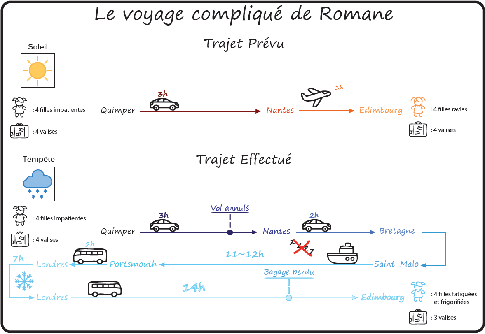
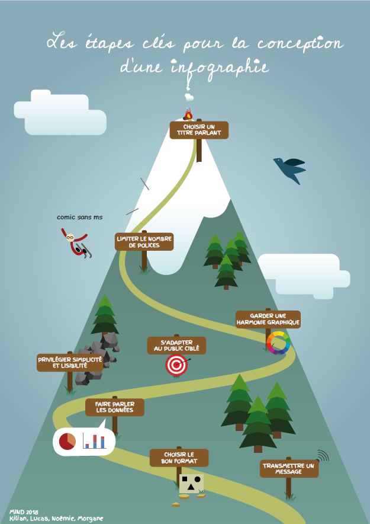
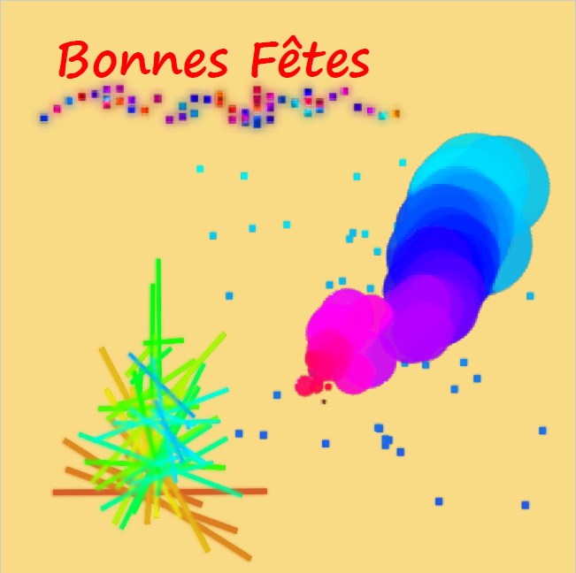
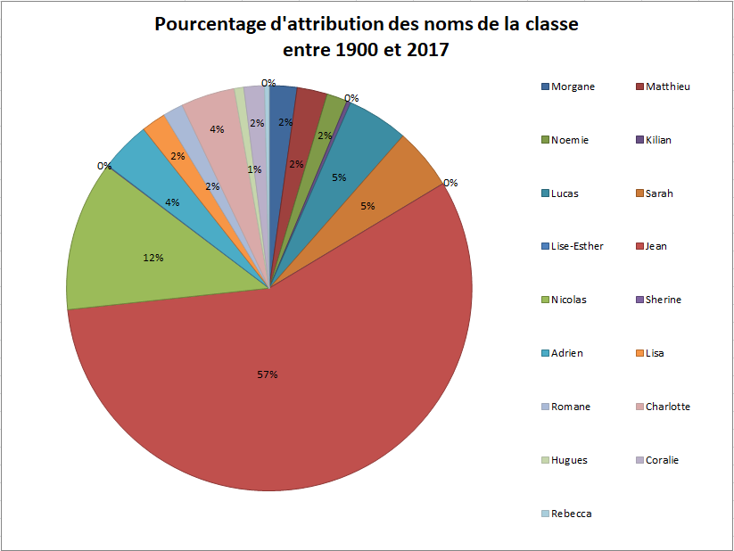

A partir d'histoire ou de données fournies par un camarade de classe, il fallait produire une infographie aussi claire et esthétique que possible.
Le but de l'exercice était de créer une infographie résumant les grandes étapes pour réussir une bonne infographie.
Il fallait que nous utilisions une base de données réelle pour déformer la représentation graphique de cette BBD et en faire une carte de voeux. J'ai utilisé les résultats pour le mot "fanfiction" dans Google Trends.
Nous devions faire une timeline sur l'histoire de la datavisualisation avec Timeline JS.
A ce lien
Ce graphique a été fait à partir de la base de données DataGouv sur les prénoms français (hors Mayotte) de 1900 à 2017. Le but était de représenter les données de manière graphique et claire.
Notre proposition pour Hackaviz 2019.